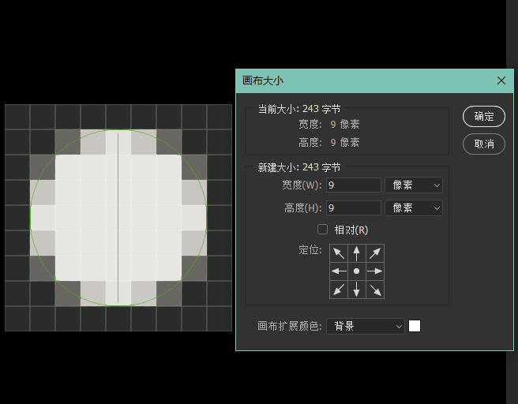
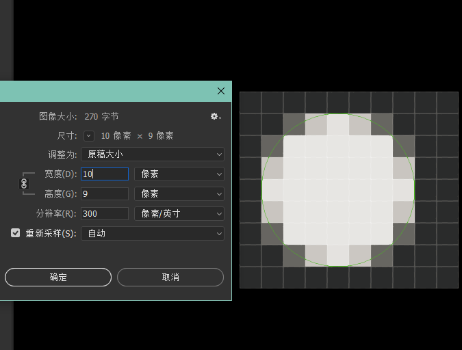
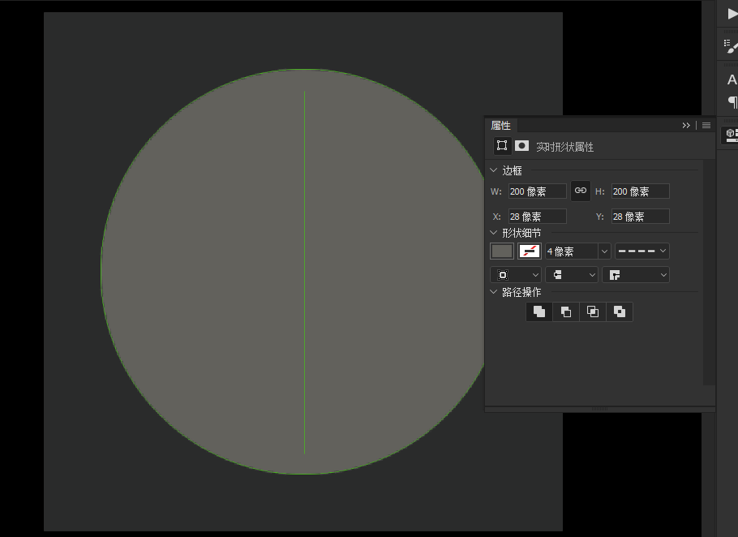
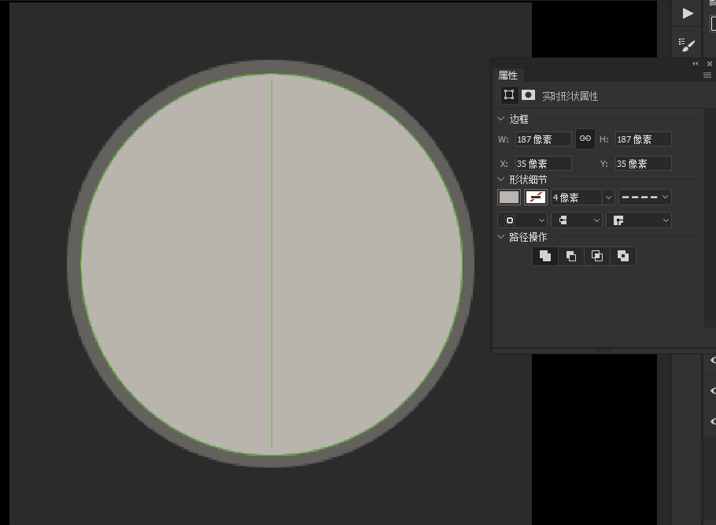
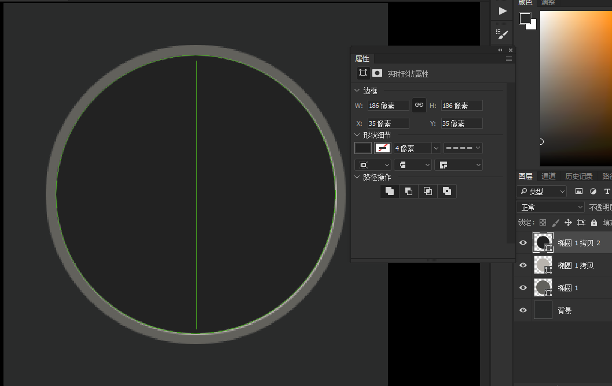
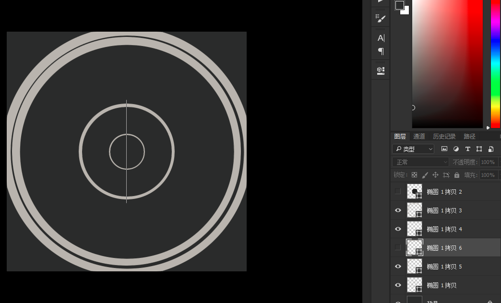
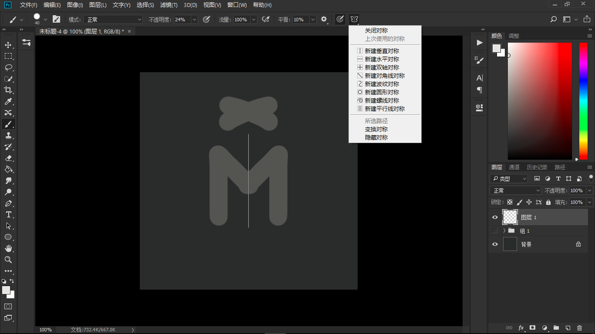
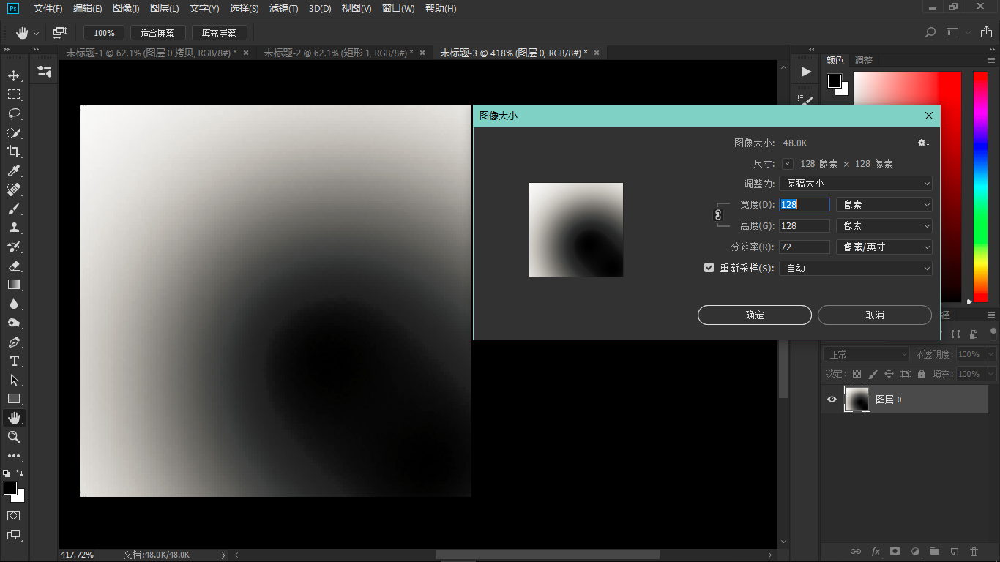

想了想，上次的post还是不删了,毕竟整整两个月就只发了这么一篇可做时间节点标记的短文（或许连短文都算不上，哈哈）
说回正文，用photoshop差不多快四年时间了，从高中毕业刚买电脑就兴冲冲地自学了一周Photoshop，到现在一提PS脑子里却只想赶紧换个电脑，其中各种体会一言难尽。
对于使用PS（以下简称Photoshop为PS）绘制图形时需要注意的要点或问题，可能有很多同行或是厉害的大佬早就留意到并有解决方案了，但我还是想给自己也做个整理，权当是备忘录。
1.小尺寸画布上绘制矢量图的对称问题
2.实时对称同步绘制
3.小尺寸画布上柔和画笔边缘失真问题
4.图层属性中颜色叠加与渐变叠加混用需注意
5.为尖锐形状添加投影或描边需注意
6.绘制方式对内存及文件大小占用的影响评估
7.多个矢量形状合并和去重的使用技巧
8.矩形圆角大小在矩形放缩后产生变化的解决方案
注：查看右栏可直接跳转
小尺寸画布上绘制矢量图的对称问题
一般情况下这个问题其实也不算是个问题，但在特殊的情况下还有强迫症的话。。就很糟心了。比如我们要求在一个小尺寸画布里做一个居中的正圆，看起来是不是很简单？我们把画布设定为9x9 px,然后做一个正圆，OK，一下子就搞定了嘛。

但是，即使看起来确实简单，却在某些画布的尺寸要求下，或许就没那么容易让我们做到这点了。看，我稍稍把画布宽度由9改成10，这下，无论我再怎么移动这个圆，它都对不齐中心了。

这里可不是因为我设定了对齐网格什么之类，这个问题与对齐设定关系不大。产生这个问题的原因与像素格子有关。只要元素的长或宽与画布上需要对称的维度上的像素数是奇偶数组合的，都会存在这个问题。例如直径为7的圆要在宽度是10的画布上做到左右居中，难了。
刚才也说到，这个问题不算问题，毕竟什么情况下才会用到这么小的画布呀，大画布里稍偏一列的像素格子，又有谁能发现呢。所以有人可能会说，探讨这个问题意义不大。
然而，有那么一些时候，即使是在大画布里，也足够糟心。相信画UI的都有这么一个体验，想通过图形组合来构造新的图形，但是在调整位置时怎么都无法让这个图形做得左右一致。
光说不好理解，这里举个例子：
我新建了一块画布（256x256px）,这个尺寸对于画UI的应该是很常见了吧。然后我画了一个200x200的圆（圆1），并居中。到这里是没什么问题的。

但是呢，在我Ctrl+J复制一层，并按Ctrl+T稍稍缩小这个圆（圆2）时，问题就出来了。请看下图，一眼看去，有没觉得左右不均匀？是不是似乎左边比右边宽了？相信我，眼尖的人会敏锐地察觉到这点。

如果你真看不出来，没关系，我们再做一个居中的圆（圆3，直径186x186）,这下清晰了，很明显刚才圆2稍往右偏移了。

如果你有留意缩小后的圆2的直径，你就会发现，187和200，正好是奇偶数组合，即是说里面的那个圆事实上是不居中的。这意味着当我们想通过圆1和圆2“去顶合并图形”做一个中空圆环时，这个环是不均匀的。
那这会有什么影响呢？我们都知道矢量图形不同于位图，是可以随意放缩的，经放大和缩小后的图形边缘既不会糊也不会有齿。但在刚才那种情况下，放缩就很成问题了，虽然边缘清晰度依旧，但是偏移度变了，这种不均匀的图形放得越大，偏移的感觉越明显。

当然，这里只是举了个例子，做圆环什么的可以通过设置边缘宽度而不填充就可以做到完美了。但是很多时候，复杂的块状图形还是需要图形组合才能做得了。
为什么看似合理的操作却做出一个不合理的图形呢？哈哈，实话说我个人认为没有什么根治的方法。在这篇文章中我想表达的是，在对称制图过程中留意画布尺寸和图形尺寸的关系，尽量避免奇偶数这种组合，或许才能更好地避免这种情况。我以前一般遇到上面这些问题，会通过事后尺寸调整或者位置移动把视觉上的误差修正，但这无疑是加大不必要的工作量而已。
实时对称同步绘制
实时同步绘制功能是我期待已久的，但在2018版本的Photoshop里才开始出现。自从更新了之后，我就离不开实时对称绘制了，画图标时真的轻松，没有了复制翻转等各种乱七八糟的操作，甚至还可以在设计纹样时提供灵感，可以说是两年来Adobe产品功能更新中最实用的功能之一。

开启方式很简单，在使用画笔工具时，点击右上角属性栏里的一个蝴蝶状图标，就可以看到如图的操作了。值得注意的是，目前仅画笔工具可以使用该功能。
小尺寸画布上柔和画笔边缘失真问题

这个截图里的情形我想很多人是遇到过的，想要做一个边缘柔和的光效，却弄出来一环环突兀的圈来，想拉个渐变，却发现拉成了梯子，这个问题在PS里是bug般的存在。因为不仅小尺寸画布里会这样，大的也一样，只不过在小尺寸画布里会特明显。我个人猜想原因和PS的渲染算法有关，基本上无解。所以在此挂出来，等待有缘的大佬路过解惑~